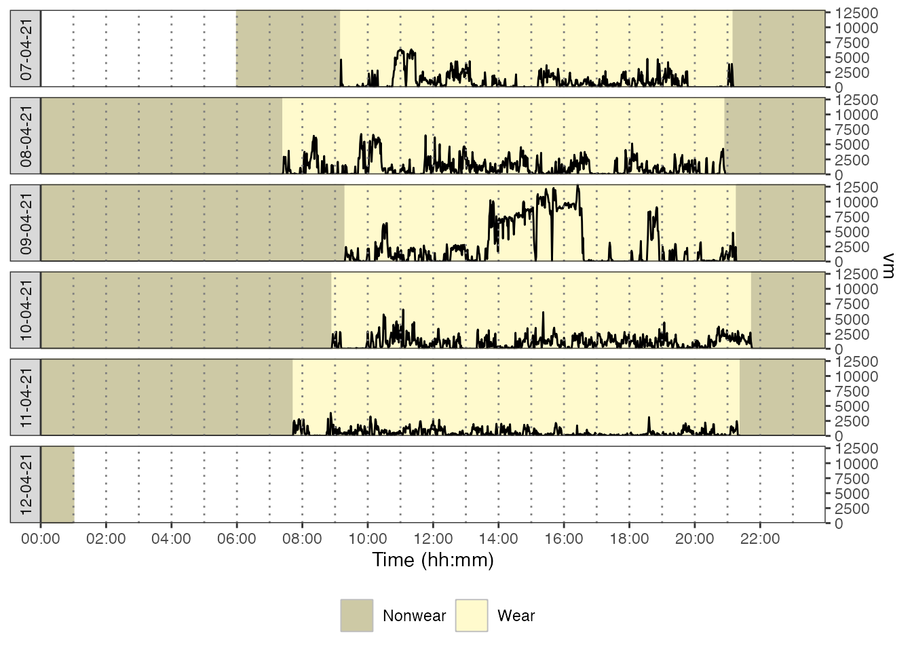
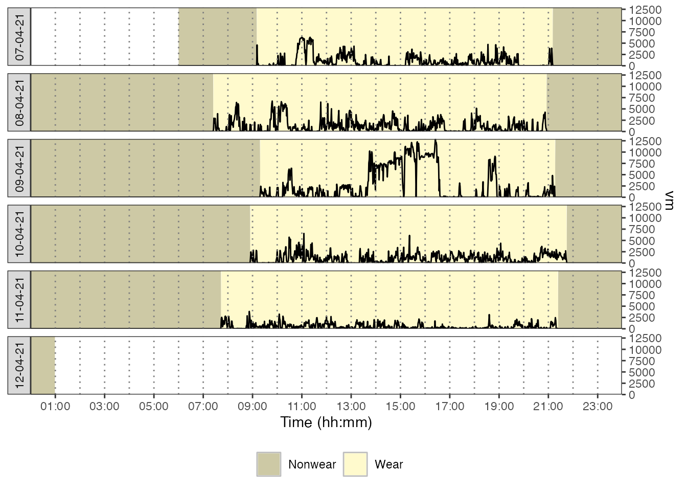

The activAnalyzer package was primarily built for working through a Shiny app. The procedure for using the app is explained in the related user’s guide. The functions used in this app can also be used to analyze data outside the app, as shown below.
Getting file
file <- system.file("extdata", "acc.agd", package = "activAnalyzer")Preparing dataset
mydata <- prepare_dataset(data = file)Getting nonwear/wear time marks
mydata_with_wear_marks <-
mydata %>%
mark_wear_time(
to_epoch = 60,
cts = "vm",
frame = 90,
allowanceFrame = 2,
streamFrame = 30
)
#> frame is 90
#> streamFrame is 30
#> allowanceFrame is 2
plot_data(data = mydata_with_wear_marks, metric = "vm")
Getting physical activity intensity marks
mydata_with_intensity_marks <-
mark_intensity(
data = mydata_with_wear_marks,
col_axis = "vm",
equation = "Sasaki et al. (2011) [Adults]",
sed_cutpoint = 200,
mpa_cutpoint = 2690,
vpa_cutpoint = 6167,
age = 32,
weight = 67,
sex = "male",
)
plot_data_with_intensity(mydata_with_intensity_marks, metric = "vm" )
Getting results by day
results_by_day <-
mydata_with_intensity_marks %>%
recap_by_day(
age = 32,
weight = 67,
sex = "male",
valid_wear_time_start = "07:00:00",
valid_wear_time_end = "22:00:00"
)
results_by_dayGetting results averaged over valid days
averaged_results <-
results_by_day %>%
average_results(minimum_wear_time = 10, fun = "mean")
averaged_results